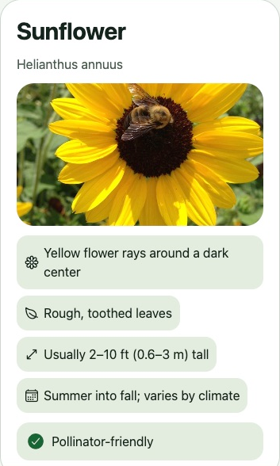

02 · Meet the plant in your story
Search a name.
Open a story.
Explore›Search plants›Sunflower
Try “sunflower” and open the built-in Sunflower card.
1. Type a plant name
Use Search plants; a camera is optional.
2. Compare its clues
Look at the flower, leaves, height, and season.
3. Open the built-in card
External website results are a different path.

MeetConnectReturnCare
Study guide · practice here is not saved in the app
Try it in Plantopedia
Explore → Search plants → enter sunflower → built-in Sunflower
- Find the common name Sunflower and scientific name Helianthus annuus.
- Read two traits. Compare them with a plant you can safely observe; the reference photo is not your own observation.
- For saved discovery credit, open the built-in result while signed in. Guest exploration does not receive credit retroactively.
Does opening an external website result complete the discovery checkpoint?
No. The supported discovery path is opening the built-in plant result from Search while signed in.